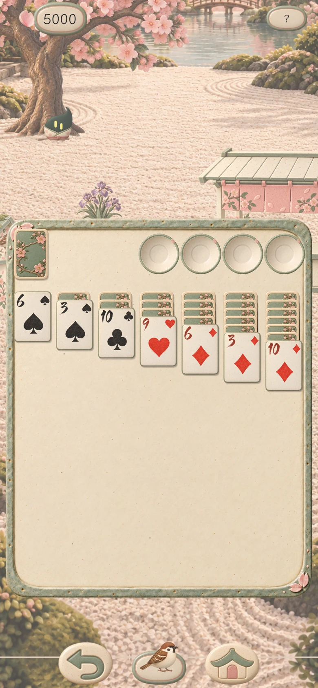

01 / DIE PATIENCEN
Die Freude an einer gut gelegten Karte.
Klondike, FreeCell, Spider, Yukon … Die Klassiker haben einen neuen Garten gefunden.
DEINE KLEINE JAPANISCHE AUSZEIT
Ein paar Karten, einige Spielsteine und Zeit zum Durchatmen. Spiele ganz in Ruhe und gestalte dann mit Tomesi deinen eigenen Rückzugsort.
Ohne Werbung · In deinem Tempo · Offline
Ein kleiner Begleiter.
Ein Garten nur für dich.


VIER ORTE ZUM WOHLFÜHLEN
Eine Pflanze neben der Veranda. Eine Laterne am Wasser. Eine Katze im Moos. Jedes Stück findet seinen Platz und der Garten erwacht langsam zum Leben.
Kois ziehen langsam ihre Bahnen. Die Gestaltung des Teichs lockt neue Besucher an.
Morgen, Dämmerung oder Mondlicht: Wähle das Licht für deine Auszeit.

DIE EINFACHE FREUDE AM SPIELEN
Von vertrauten Patiencen bis zu kleinen japanisch inspirierten Rätseln: Wähle, worauf du heute Lust hast. Jeder Sieg lässt den Garten erblühen.

Klondike, FreeCell, Spider, Yukon … Die Klassiker haben einen neuen Garten gefunden.

Entdecke Muster, befreie die Steine und lass deine Gedanken zur Ruhe kommen.

Ensō, Tsukimi, Koi Michi … Kleine Rätsel für etwas Abwechslung.
Vier kostenlose Spiele, für immer. Klondike, Mahjong-Solitaire, Pyramide und Ensō.
Die Sammlung vereint zwölf weitere Spiele in einem einmaligen Kauf. Ohne Abo, ohne Werbung.
Tippe ihn an, um Hallo zu sagen.
DERSELBE TOMESI, EIN NEUER RÜCKZUGSORT
Du kennst seine kleine grüne Silhouette. Hier zieht Tomesi seinen Kimono an, macht es sich neben dir gemütlich und begleitet dich durch den Garten. Auf dem Wasser nimmt er sein kleines Boot.
Mit gesammelten Blütenblättern kannst du auch neue Outfits für ihn wählen.
Interaktive Vorschau der Spielfiguren.
Die Welt von Tomesi entdeckenBEVOR DU ES DIR GEMÜTLICH MACHST
Tomesi Garden erscheint bald für iPhone und iPad. Sobald das Spiel verfügbar ist, findest du hier den Downloadlink.
Nein. Weder vor einer Partie noch nach einem Sieg. Der Garten bleibt ein ruhiger Ort.
Die Spiele und der Garten funktionieren offline und ohne Konto. Eine Internetverbindung brauchst du nur, um die App zu laden und im App Store etwas zu kaufen oder einen Kauf wiederherzustellen.
Beim Spielen sammelst du Blütenblätter. Im Gartenladen kannst du sie für Dekorationen, Begleiter, Outfits und Kartenstile verwenden.
Ja. Verschiebe deine Dekorationen an passende Stellen: auf den Boden, ins Wasser oder auf die Veranda. Das Inventar zeigt die möglichen Plätze. So finden Pflanzen, Teegeschirr und kleine Begleiter auch vor dem Haus ihren Platz.
Ja, das Spiel bietet einen Modus mit reduzierten Bewegungen. Auf dieser Website stoppt die Pausentaste die Animationen; die Einstellung deines Geräts wird ebenfalls berücksichtigt.
WIR HALTEN DIR EINEN PLATZ FREI
Bald für iPhone und iPad.
Eine Frage? Schreib uns